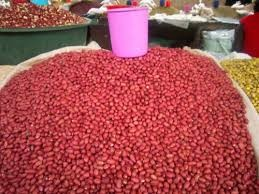

Groundnuts, also known as peanuts (Arachis hypogaea), are a legume crop grown mainly for their edible seeds. Despite being called "nuts," they are botanically classified as legumes, similar to beans and lentils. They are an important source of protein, healthy fats, and essential nutrients.
